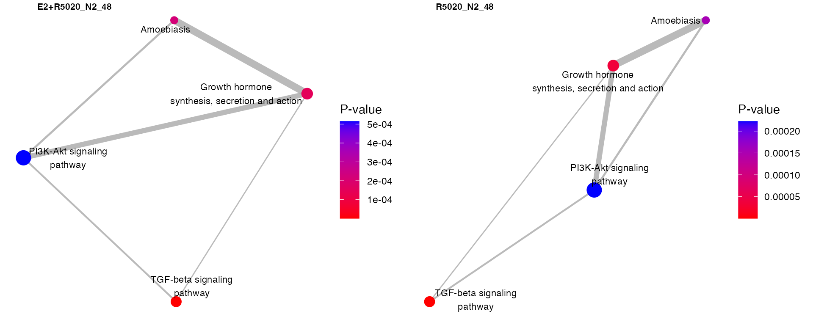

sSNAPPY: Singel Sample directioNAl Pathway Perturbation analYsis
Wenjun Nora Liu
Dame Roma Mitchell Cancer Research Laboratories, Adelaide Medical School, University of Adelaidewenjun.liu@adelaide.edu.au Source:
vignettes/sSNAPPY.Rmd
sSNAPPY.RmdIntroduction
This vignette demonstrates how to use the package
sSNAPPY to compute directional single sample pathway
perturbation scores by incorporating pathway topologies, utilize sample
permutation to test the significance of individual scores and compare
average pathway activities across treatments.
The package also provides a function to visualize overlap between pathway genes contained in perturbed biological pathways as network plots.
Installation
The package sSNAPPY can be installed using the package
BiocManager, along with other packages required for this
vignette (tidyverse, magrittr,
ggplot2, cowplot, and DT).
if (!"BiocManager" %in% rownames(installed.packages()))
install.packages("BiocManager")
pkg <- c("tidyverse", "magrittr", "ggplot2", "cowplot", "DT")
BiocManager::install(pkg)
BiocManager::install("sSNAPPY")load data
The example dataset used for this tutorial can loaded with
data() as shown below. It’s a subset of data retrieved from
Singhal
H et al. 2016, where ER-positive primary breast cancer tumor tissues
collected from 12 patients were split into fragments of equal sizes for
different treatments. For the purpose of this tutorial, we only took the
RNA-seq data from samples that were treated with vehicle, E2 OR E2 +
R5020 for 48 hrs. They were from 5 different patients, giving rise to 15
samples in total. More detailed description of the dataset can be
assessed through the help page (?logCPM_example and
?metadata_example).
data(logCPM_example)
data(metadata_example)
# check if samples included in the logCPM matrix and metadata dataframe are identical
setequal(colnames(logCPM_example), metadata_example$sample)## [1] TRUE
# View sample metadata
datatable(metadata_example, filter = "top")Compute weighted single-sample logFCs (ssLogFCs)
It is expected that the logCPM matrix will be filtered to remove undetectable genes and normalised to correct for library sizes or other systematic artefacts, such as gene length or GC contents, prior to applying this method. Filtration and normalisation has been performed on the example dataset.
Before single-sample logFCs (ssLogFCs) can be computed, row names of
the logCPM matrix need to be converted to entrez ID. This
is because all the pathway topology information retrieved will be in
entrez ID. The conversion can be achieved through
bioconductor packages AnnotationHub and
ensembldb.
head(logCPM_example)## Vehicle_N2_48 E2+R5020_N2_48 R5020_N2_48 Vehicle_N3_48 E2+R5020_N3_48
## 7105 4.081669 5.109147 4.695391 4.673548 5.217774
## 57147 5.211258 3.844185 4.343678 3.601125 3.427482
## 55732 2.111865 1.366069 2.471200 1.975589 1.713835
## 2268 6.930587 4.341791 4.388130 5.309135 5.066294
## 90529 1.725384 2.997631 3.035200 3.161472 3.320000
## 22875 4.099909 3.635736 3.845961 4.701901 4.886946
## R5020_N3_48 Vehicle_P4_48 E2+R5020_P4_48 R5020_P4_48 Vehicle_P5_48
## 7105 4.296947 4.667555 4.741936 4.621193 5.484910
## 57147 4.277160 5.128271 4.486209 4.624768 3.549639
## 55732 2.222948 2.437893 3.147235 3.327889 2.368816
## 2268 3.775364 2.912324 3.911222 4.258518 3.029545
## 90529 2.719585 4.578478 3.624418 3.660976 3.477681
## 22875 4.624176 5.453882 4.616053 5.200638 4.080996
## E2+R5020_P5_48 R5020_P5_48 Vehicle_P6_48 E2+R5020_P6_48 R5020_P6_48
## 7105 5.678579 5.118092 5.636142 5.434636 5.753488
## 57147 4.113434 3.802290 3.815933 3.965867 3.914067
## 55732 2.438389 2.594323 1.028753 1.493969 2.365653
## 2268 1.530079 3.044646 2.904204 3.796048 3.336565
## 90529 3.307986 3.073607 3.577813 3.450174 3.613297
## 22875 3.696430 3.267462 4.436550 4.363616 4.402518To compute the ssLogFCs, samples must be in matching pairs. In the
example, treated samples are matched to the corresponding control sample
that were derived from the same patients. So the factor
parameter of the weight_ss_fc() functions needs to be set
to be “patient”. The function also requires the control treatment level
to be specified, which was “Vehicle” in this case.
weight_ss_fc() requires both the logCPM matrix and
sample metadata as input. The column names of the logCPM matrix should
be sample name, matching to a column called sample in the
metadata. The metadata must also contain a treatment column, and a
column corresponding to the factor parameter (i.e.. patient
in this case).
#compute weighted single sample logFCs
weightedFC <- weight_ss_fc(logCPM_example, metadata = metadata_example,
factor = "patient", control = "Vehicle")The weight_ss_fc() function firstly computes raw
ssLogFCs for each gene by subtracting logCPM values of control sample
from the logCPM values of treated samples for each patient.
It has been demonstrated previously that in RNA-seq data, lowly
expressed genes turn to have larger variance, which is also demonstrated
by the plots below. To reduce the impact of this artefact,
weight_ss_fc also weight each ssLogFCs by estimating the
relationship between the variance in ssLogFCs and mean logCPM, and
defining the gene-wise weight to be the inverse of the predicted
variance of that gene’s mean logCPM value.
The output of the weight_ss_fc() function is a list with
two element, where one is the weighted ssLogFCs matrix and the other is
a vector of gene-wise weights.
Retrieve pathway topologies in required format
sSNAPPY adopts the pathway perturbation scoring algorithm proposed in SPIA, which makes use of gene-set topologies and gene-gene interaction to propagate pathway genes’ logFCs down the topologies to compute pathway perturbation scores, where signs of scores reflect the potential directions of changes.
Therefore, pathway topology information need to be firstly retrieved
from your chosen database and converted to weight adjacency matrices,
the format required to apply the scoring algorithm. This step is
achieved through a chain of functions that are part of the grapghite
and has been nested into one simple function in this package:
retrieve_topology(). Databases that are currently supported
are:
library(graphite)
graphite::pathwayDatabases() %>%
dplyr::filter(species == "hsapiens") %>%
pander::pander()| species | database |
|---|---|
| hsapiens | kegg |
| hsapiens | panther |
| hsapiens | pathbank |
| hsapiens | pharmgkb |
| hsapiens | reactome |
| hsapiens | smpdb |
| hsapiens | wikipathways |
The retrieved topology information will be a list where each element is a pathway. We recommend you to save it as a file so this step only needs to be performed once for each database.
This vignette chose KEGG pathways as an example. To reduce the computation time in the following steps, only half of the randomly sampled KEGG pathways were kept.
gsTopology <- retrieve_topology(database = "kegg")
head(names(gsTopology))## [1] "Glycolysis / Gluconeogenesis"
## [2] "Citrate cycle (TCA cycle)"
## [3] "Pentose phosphate pathway"
## [4] "Pentose and glucuronate interconversions"
## [5] "Fructose and mannose metabolism"
## [6] "Galactose metabolism"If only selected pathways are of interest, it’s possible to only retrieve the topologies of those pathways by specifying the pathway names.
gsTopology_sub <- retrieve_topology(
database = "kegg",
pathwayName = c(
"Glycolysis / Gluconeogenesis",
"Citrate cycle (TCA cycle)",
"Pentose phosphate pathway"
))
names(gsTopology_sub)## [1] "Glycolysis / Gluconeogenesis" "Citrate cycle (TCA cycle)"
## [3] "Pentose phosphate pathway"Score single sample pathway perturbation
Once the expression matrix, sample metadata and pathway topologies
are all ready, single sample pathway perturbation scores (PS) can be
computed using function compute_perturbation_score(), which
returns a data.frame containing the test perturbation scores for each
sample each pathway.
ssPertScore <- compute_perturbation_score(weightedFC$logFC, gsTopology)
head(ssPertScore)## sample tA gs_name
## 1 E2+R5020_N2_48 0.006751152 EGFR tyrosine kinase inhibitor resistance
## 2 R5020_N2_48 0.006744556 EGFR tyrosine kinase inhibitor resistance
## 3 E2+R5020_N3_48 0.002683974 EGFR tyrosine kinase inhibitor resistance
## 4 R5020_N3_48 -0.003974106 EGFR tyrosine kinase inhibitor resistance
## 5 E2+R5020_P4_48 0.004130870 EGFR tyrosine kinase inhibitor resistance
## 6 R5020_P4_48 0.015279018 EGFR tyrosine kinase inhibitor resistanceGenerate null distributions of perturbation scores
To derive the empirical p-values for each single sample PS or normalize the raw scores for comparing overall treatment effects, null distributions of scores for each pathway is generated through a sample-label permutation approach.
For each round of permutation, sample labels are randomly shuffled to
derive the permuted ssLogFCs, which are then used to score pathway
perturbation. We recommend to perform a minimum of 1000 rounds of
permutation, which means at least 8 samples are required. The
generate_permuted_scores() function does not require sample
metadata but the number of treatments in the study design, including the
control treatment, need to be specified. In this example data, the
number of treatment was 3.
Output of the generate_permuted_scores() function is a
list where each element is a vector of permuted perturbation scores for
a pathway.
The permutation step relies on the parallel computing feature
provided by BiocParallel.
User can choose to customize the parallel back-end or stick with the
default one returned by BiocParallel::bpparam(). Depending
on the size of the data, this step can take some time to complete. If
the sample size is large, we recommend users to consider performing this
step on a HPC.
permutedScore <- generate_permuted_scores(
expreMatrix = logCPM_example,
numOfTreat = 3, NB = 1000,
gsTopology = gsTopology,
weight = weightedFC$weight
)Test Significances
Of individal score
After the empirical null distributions are generated, the median and
mad will be calculated for each pathway to convert the test
single-sample perturbation scores derived from the
compute_perturbation_score() to robust z-scores: \[ (Score - Median)/MAD\] Two-sided p-values
associated with each robust z-scores are also computed and will be
corrected for multiple-testing using a user-define approach. The default
is fdr.
The normalise_by_permu function requires the test
perturbation score and permuted perturbation scores as input.
normalisedScores <- normalise_by_permu(permutedScore, ssPertScore)Since the permutation step takes a long time to run and the output is
too large to be included as part of the package, results of the
normalise_by_permu step has been pre-computed and can be
loaded with:
load(system.file("extdata", "normalisedScores.rda", package = "sSNAPPY"))The pathways that were significant perturbed within individual samples are:
normalisedScores %>%
dplyr::filter(adjPvalue < 0.05) %>%
left_join(metadata_example) %>%
mutate_at(vars(c("sample", "gs_name")), as.factor) %>%
mutate_if(is.numeric, sprintf, fmt = '%#.4f') %>%
mutate(Direction = ifelse(robustZ < 0, "Inhibited", "Activation")) %>%
dplyr::select(
sample, patient, Treatment = treatment,
`Perturbation Score` = robustZ, Direction,
`Gene-set name` = gs_name,
`P-value` = pvalue,
FDR = adjPvalue
) %>%
datatable(
filter = "top",
options = list(
columnDefs = list(list(targets = "Direction", visible = FALSE))
)
) %>%
formatStyle(
'Perturbation Score', 'Direction',
backgroundColor = styleEqual(c("Inhibited", "Activation"), c('lightblue', 'indianred'))
)Visualisation
We can use the plot_gs_network function to visualise the
significantly perturbed biological pathways as networks, where edges
between gene-sets reflect how much overlap those two gene-sets share.
The function can take normalise_by_permu’s output, or a
subset of it as its direct input.
Nodes in the network plots could be coloured by the predicted direction of perturbation (i.e.. sign of robust z-score):
pl <- normalisedScores %>%
dplyr::filter(adjPvalue < 0.05) %>%
split(f = .$sample) %>%
lapply(
plot_gs_network,
# layout = "dh",
gsTopology = gsTopology,
colorBy = "robustZ"
) %>%
lapply(function(x){
x + theme(
panel.grid = element_blank(),
panel.background = element_blank()
) })
plot_grid(
plotlist = pl,
nrow = 1)
Or p-values:
pl <- normalisedScores %>%
dplyr::filter(adjPvalue < 0.05) %>%
split(f = .$sample) %>%
lapply(
plot_gs_network,
gsTopology = gsTopology,
colorBy = "pvalue",
color_lg_title = "P-value"
) %>%
lapply(function(x){
x + theme(
panel.grid = element_blank(),
panel.background = element_blank()
) })
plot_grid(plotlist = pl, nrow = 1)
The function allows you to customize the layout, colour, edge
transparency and other aesthetics of the graph. More information can be
found in the help page (?plot_gs_network). Output of the
graph is a ggplot object and the theme of it can be changed
just as other ggplot figures.
Of overall treatment effect
Normalised perturbation scores can also be used to model mean treatment effects. An advantage of this method is that it has great flexibility that allows you to incorporate other cofactors or covariate in your modelling.
For example, in the example dataset, samples were collected from patients with different progesterone receptor (PR) status and we can include it as a cofactor to offset its confounding effect.
fit <- normalisedScores %>%
left_join(metadata_example) %>%
split(f = .$gs_name) %>%
#.["Estrogen signaling pathway"] %>%
lapply(function(x)lm(robustZ ~ 0 + treatment + PR, data = x)) %>%
lapply(summary)
treat_sig <- lapply(
names(fit),
function(x){
fit[[x]]$coefficients %>%
as.data.frame() %>%
.[seq_len(2),] %>%
dplyr::select(Estimate, pvalue = `Pr(>|t|)` ) %>%
rownames_to_column("Treatment") %>%
mutate(
gs_name = x,
FDR = p.adjust(pvalue, "fdr"),
Treatment = str_remove_all(Treatment, "treatment")
)
}) %>%
bind_rows() The pathways that were on average perturbed due to each treatment were:
treat_sig %>%
dplyr::filter(FDR < 0.05) %>%
mutate_at(vars(c("Treatment", "gs_name")), as.factor) %>%
mutate_if(is.numeric, sprintf, fmt = '%#.4f') %>%
mutate(Direction = ifelse(Estimate < 0, "Inhibited", "Activation")) %>%
dplyr::select(
Treatment, `Perturbation Score` = Estimate, Direction,
`Gene-set name` = gs_name,
`P-value` = pvalue,
FDR
) %>%
datatable(
filter = "top",
options = list(
columnDefs = list(list(targets = "Direction", visible = FALSE))
)
) %>%
formatStyle(
'Perturbation Score', 'Direction',
backgroundColor = styleEqual(c("Inhibited", "Activation"), c('lightblue', 'indianred'))
)Results from this analysis indicate that the estrogen signalling pathway was significantly activated among both E2 and E2+R5020 treated samples, which makes sense biologically.
Visualisation
Results of lm can also be visualised using the
plot_gs_network() function. We just need to change the name
of the Estimate column to robustZ to colour
the networks by the predicted directionality.
treat_sig %>%
dplyr::filter(FDR < 0.05, Treatment == "E2+R5020") %>%
dplyr::rename(robustZ = Estimate) %>%
plot_gs_network(
gsTopology = gsTopology,
colorBy = "robustZ"
) +
theme(
panel.grid = element_blank(),
panel.background = element_blank()
)
By default, plot_gs_network() function does not include
nodes that are not connected to any other nodes, which could be turnt of
by setting the plotIsolated to TURE.
References
- Sales G, Calura E, Cavalieri D, Romualdi C (2012). “graphite - a Bioconductor package to convert pathway topology to gene network.” BMC Bioinformatics. https://bmcbioinformatics.biomedcentral.com/articles/10.1186/1471-2105-13-20.
- Tarca, Adi Laurentiu et al. (2009). “A novel signaling pathway impact analysis.” Bioinformatics vol. 25,1 : 75-82. doi:10.1093/bioinformatics/btn577
Session Info
## R version 4.1.3 (2022-03-10)
## Platform: x86_64-apple-darwin17.0 (64-bit)
## Running under: macOS Big Sur/Monterey 10.16
##
## Matrix products: default
## BLAS: /Library/Frameworks/R.framework/Versions/4.1/Resources/lib/libRblas.0.dylib
## LAPACK: /Library/Frameworks/R.framework/Versions/4.1/Resources/lib/libRlapack.dylib
##
## locale:
## [1] en_AU.UTF-8/en_AU.UTF-8/en_AU.UTF-8/C/en_AU.UTF-8/en_AU.UTF-8
##
## attached base packages:
## [1] stats4 stats graphics grDevices utils datasets methods
## [8] base
##
## other attached packages:
## [1] org.Hs.eg.db_3.14.0 AnnotationDbi_1.56.2 IRanges_2.28.0
## [4] S4Vectors_0.32.4 Biobase_2.54.0 BiocGenerics_0.40.0
## [7] graphite_1.40.0 DT_0.22 cowplot_1.1.1
## [10] magrittr_2.0.3 forcats_0.5.1 stringr_1.4.0
## [13] dplyr_1.0.8 purrr_0.3.4 readr_2.1.2
## [16] tidyr_1.2.0 tibble_3.1.6 ggplot2_3.3.5
## [19] tidyverse_1.3.1 sSNAPPY_0.99.6 BiocStyle_2.22.0
##
## loaded via a namespace (and not attached):
## [1] readxl_1.4.0 backports_1.4.1
## [3] systemfonts_1.0.4 plyr_1.8.7
## [5] igraph_1.3.0 splines_4.1.3
## [7] BiocParallel_1.28.3 crosstalk_1.2.0
## [9] GenomeInfoDb_1.30.1 digest_0.6.29
## [11] htmltools_0.5.2 viridis_0.6.2
## [13] fansi_1.0.3 checkmate_2.0.0
## [15] memoise_2.0.1 tzdb_0.3.0
## [17] limma_3.50.3 Biostrings_2.62.0
## [19] graphlayouts_0.8.0 modelr_0.1.8
## [21] matrixStats_0.61.0 pkgdown_2.0.2
## [23] colorspace_2.0-3 blob_1.2.3
## [25] rvest_1.0.2 rappdirs_0.3.3
## [27] ggrepel_0.9.1 textshaping_0.3.6
## [29] haven_2.5.0 xfun_0.30
## [31] crayon_1.5.1 RCurl_1.98-1.6
## [33] jsonlite_1.8.0 graph_1.72.0
## [35] glue_1.6.2 polyclip_1.10-0
## [37] gtable_0.3.0 zlibbioc_1.40.0
## [39] XVector_0.34.0 DelayedArray_0.20.0
## [41] scales_1.2.0 DBI_1.1.2
## [43] edgeR_3.36.0 Rcpp_1.0.8.3
## [45] viridisLite_0.4.0 bit_4.0.4
## [47] htmlwidgets_1.5.4 httr_1.4.2
## [49] ellipsis_0.3.2 pkgconfig_2.0.3
## [51] farver_2.1.0 sass_0.4.1
## [53] dbplyr_2.1.1 locfit_1.5-9.5
## [55] utf8_1.2.2 tidyselect_1.1.2
## [57] labeling_0.4.2 rlang_1.0.2
## [59] reshape2_1.4.4 munsell_0.5.0
## [61] cellranger_1.1.0 tools_4.1.3
## [63] cachem_1.0.6 cli_3.2.0
## [65] generics_0.1.2 RSQLite_2.2.12
## [67] broom_0.8.0 evaluate_0.15
## [69] fastmap_1.1.0 yaml_2.3.5
## [71] ragg_1.2.2 knitr_1.38
## [73] bit64_4.0.5 fs_1.5.2
## [75] tidygraph_1.2.1 pander_0.6.5
## [77] KEGGREST_1.34.0 ggraph_2.0.5
## [79] nlme_3.1-157 xml2_1.3.3
## [81] compiler_4.1.3 rstudioapi_0.13
## [83] png_0.1-7 reprex_2.0.1
## [85] tweenr_1.0.2 bslib_0.3.1
## [87] stringi_1.7.6 highr_0.9
## [89] desc_1.4.1 lattice_0.20-45
## [91] Matrix_1.4-1 vctrs_0.4.1
## [93] pillar_1.7.0 lifecycle_1.0.1
## [95] BiocManager_1.30.16 jquerylib_0.1.4
## [97] bitops_1.0-7 GenomicRanges_1.46.1
## [99] R6_2.5.1 bookdown_0.26
## [101] gridExtra_2.3 MASS_7.3-56
## [103] assertthat_0.2.1 SummarizedExperiment_1.24.0
## [105] rprojroot_2.0.3 withr_2.5.0
## [107] GenomeInfoDbData_1.2.7 mgcv_1.8-40
## [109] parallel_4.1.3 hms_1.1.1
## [111] grid_4.1.3 rmarkdown_2.13
## [113] MatrixGenerics_1.6.0 ggforce_0.3.3
## [115] lubridate_1.8.0